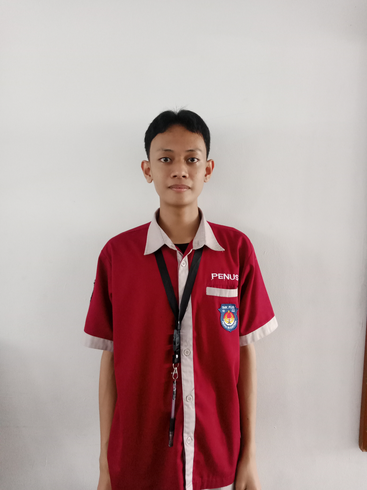
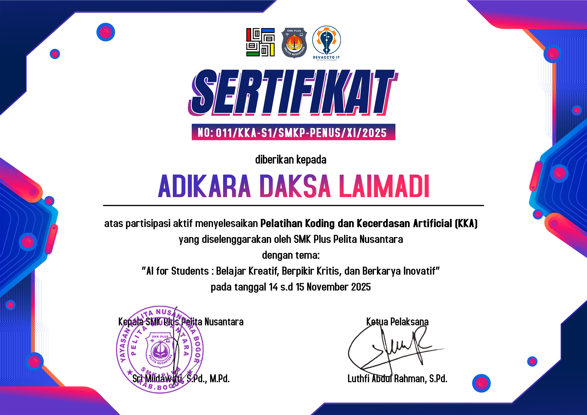

Pelajar yang tertarik di bidang teknologi, desain, pengembangan diri.

Halo! Saya Adikara, seorang pelajar yang memiliki minat dalam dunia teknologi dan kreativitas digital. Saya senang belajar hal baru secara mandiri, mulai dari coding dasar hingga fotografi dan editing. Website ini berisi kumpulan karya, pengalaman, dan perkembangan skill saya.
Saya percaya bahwa belajar teknologi sejak dini adalah langkah penting untuk masa depan. Saat ini saya terus mengembangkan kemampuan di bidang coding dan kreativitas digital, dengan tujuan menjadi individu yang mampu menciptakan karya yang bermanfaat dan bernilai.
Kumpulan sertifikat dan penghargaan yang telah diraih.

Tertarik untuk berkolaborasi atau sekadar menyapa? Hubungi saya lewat platform favorit kamu di bawah ini!